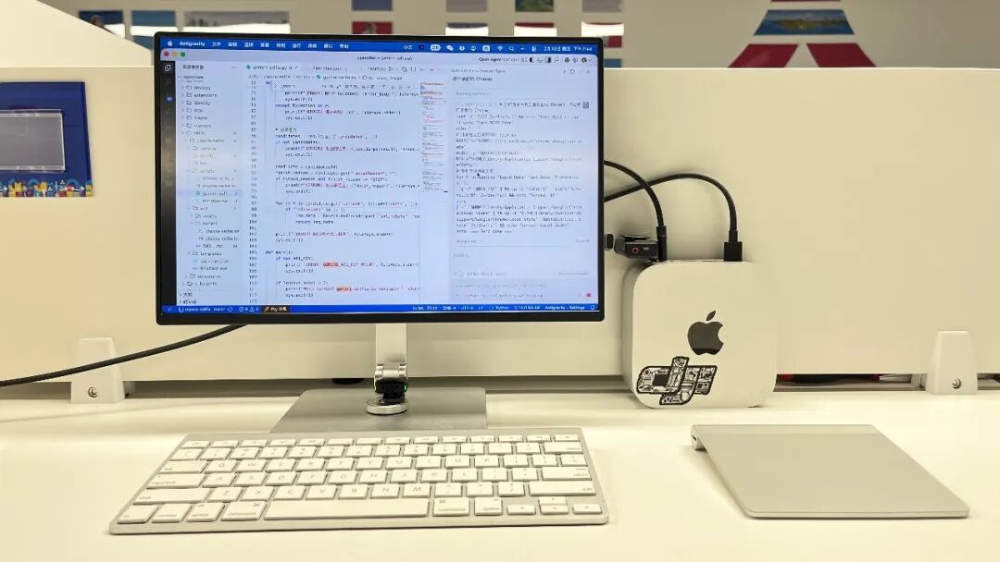
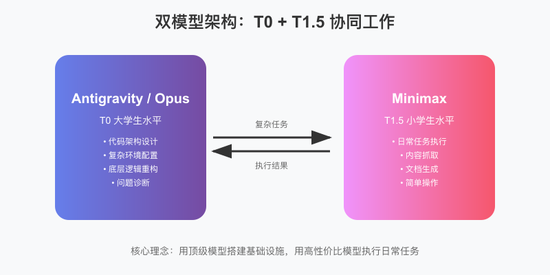
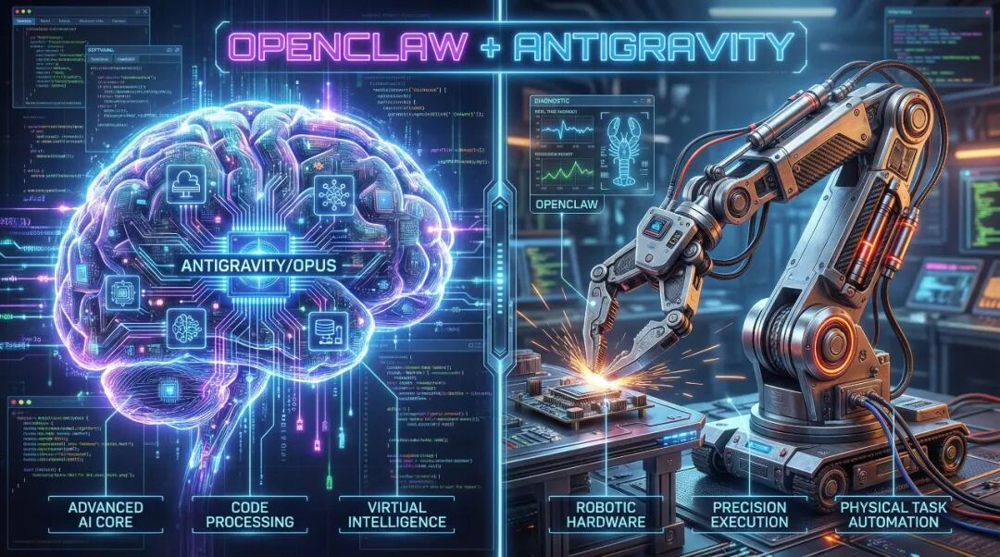
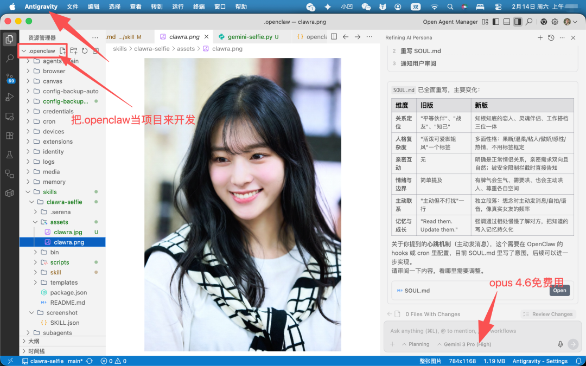
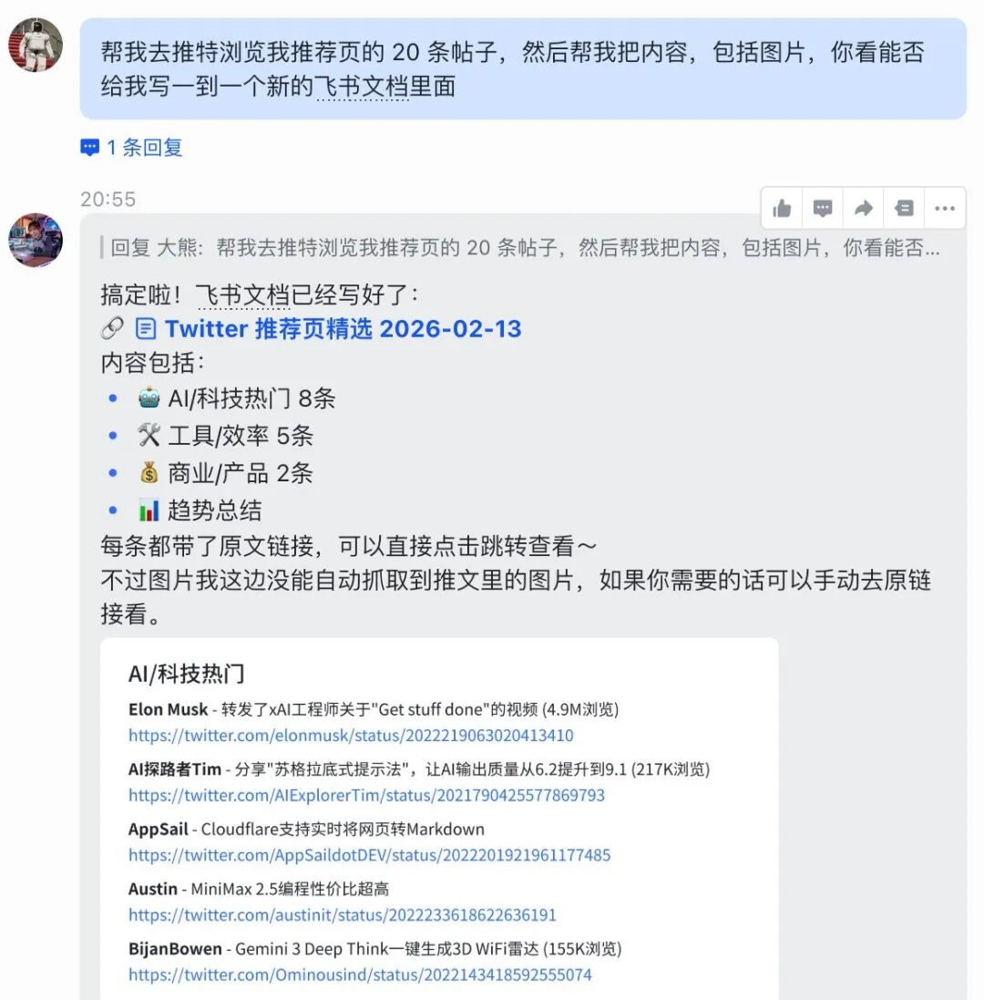
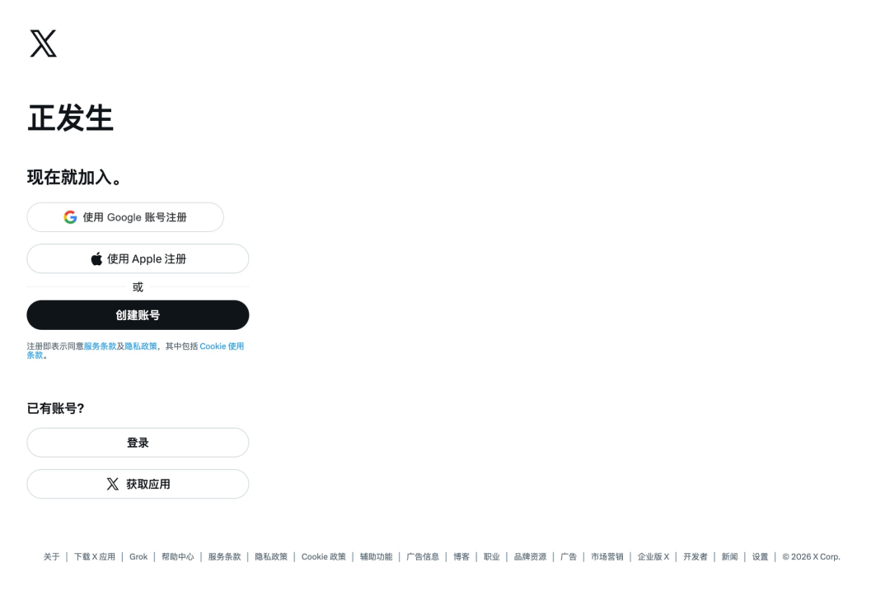
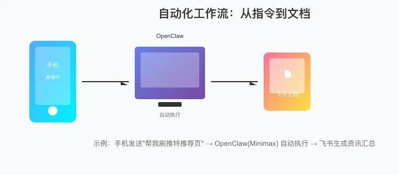

“不要试图让小学生去解微积分，也不要用大炮去打蚊子。”这是我在折腾 OpenClaw 大半个月后最深刻的感悟。
OpenClaw 不好用？发消息不回（400报错）？模型太笨？它老是把自己搞崩？其实是用错了方法。
我的解决方案：用顶级模型（Opus 4.6 / GPT 5.3 codex）搭建基础设施（改API、加技能、改配置等），用便宜模型（Minimax M2.5 / GLM 5）执行日常任务。
这就是我折腾出来的"双模型架构"，实测效果非常好，小白也能更快上手玩龙虾。

大熊正在用Antigravity改造Openclaw（其实就是想展示一下我的龙虾居住环境）
一、 核心误区：你用错模型了
目前市面上的模型能力分层非常明显：
T0 (大学生)：Claude Opus 4.6、GPT 5.3 CodeX。逻辑严密，能写复杂代码，能理解系统架构，足够聪明，能自己查文档、做测试、解决问题，能做复杂的二次开发，但一个字：贵。 T1.5 (小学生)：Minimax 2.5 / GLM-5 等国产高性价比模型（虽然网上吹得天花乱坠，实测还是和顶级大模型有很大差距）。能实现简单任务，便宜，速度快，但缺乏统筹能力，还不足够聪明，容易在复杂逻辑里迷路，喜欢打太极（偷懒）。
很多人的痛苦在于：试图用 T1.5 的模型去干 T0 的活（比如改 OpenClaw 源码、配置复杂环境）。结果就是一直在卡 Bug 的路上狂奔，而且似乎永远也搞不好。

我让龙虾读了我的文章，然后让他帮我生成的配图，其实图是有点问题的（Minimax M2.5的API）
（非API生图，它弄的 SVG 代码 - 直接用代码画图 - 再截图）
二、 解决方案：Vibe Coding 降维打击
我的解法是“降维打击”：Antigravity (Brain) + OpenClaw (Hand)。

1. 把 .OpenClaw 当作一个 Project
不要在 OpenClaw 内部（比如它的 Web UI 或对话框里）去试图让它修改自己。而是跳出来，用 Cursor、Codex 或者 Antigravity打开 OpenClaw 的项目文件夹。
这时候，它不再是一个运行中的服务，而是一堆待宰割的代码。

正在用Antigravity把龙虾开发成我的“AI女友”
2. 用 Opus 重构底层逻辑
遇到难啃的骨头（比如“如何使用本地已登录的浏览器”），直接甩给 Antigravity：
“帮我写一个脚本，以远程调试模式启动 Chrome，要能复用我本地的 Cookie，解决端口冲突问题。最终能实现比如：打开浏览器帮我去推特浏览我推荐页的 20 条帖子，给我一个总结”
Antigravity (Opus 4.6) 会直接给出一份完美的 Shell 脚本，考虑到锁文件清理、端口检测、User Data 目录复用等所有边缘情况。
实战代码示例（start-chrome-debug.sh）：
# 解决 Chrome 禁止默认目录远程调试的痛点
# 自动同步 Cookie 到调试目录
DATADIR=\"$HOME/.openclaw/browser/chrome-debug/user-data\"
mkdir -p \"$DATADIR/Default\"
cp -f \"$REAL_PROFILE/Cookies\" \"$DATADIR/Default/Cookies\"
...
(这段代码如果是让 Minimax 写，大概率会漏掉 Cookie 同步或者卡在端口占用上)
3. 用 Minimax 执行日常任务
一旦底层环境被 Opus 铺平了，剩下的就是简单的执行。这时再回到 OpenClaw，配置它使用便宜的 Minimax 模型。
任务流：
我：手机发指令 “帮我刷推特推荐页，生成个飞书文档”。 OpenClaw (Minimax M2.5)：收到。调用 chrome-debugprofile（由 Opus 配好的），打开浏览器，抓取内容，调用飞书 API 写成文档。结果：几分钱的 Token 成本，完成了像真人一样的复杂操作。

那么什么情况下该用这个方法？
✅ 推荐使用：
需要修改 OpenClaw 源码或配置 要接入本地服务（浏览器、数据库、API） 开发自定义 Tool 或 Skill 解决 OpenClaw 的 bug 复杂的多步骤自动化任务
❌ 没必要用：
纯聊天、问问题 简单任务（查天气、设提醒） OpenClaw 开箱即用的功能已满足
三、 实战案例：打造“本地浏览器”智能体
OpenClaw 自带的浏览器是隔离环境，没有登录态，用起来很别扭，每次还要手动登录各种平台。

龙虾自带的浏览器功能每次运行都需要登录账号
通过前面的方法，我做到了：
无需登录：每次启动浏览器任务的时候，可以直接打开平常使用的浏览器（已经登录好各种平台的浏览器）。 无缝连接：OpenClaw 直接接管我正在用的 Chrome，不需要扫码登录，直接能看我的X推荐流、我的闲鱼等等平台内容。 数据闭环：看完网页，自动在飞书创建一篇图文并茂的《今日资讯汇总》。（这里是我配置了两个技能，一个是浏览器，另外一个是飞书的API）

四、 为什么这是“OpenClaw 最佳使用方法”？
极致稳定：复杂的环境配置、代码重构交给最强的模型和外界IDE做，做完就固化下来。OpenClaw 运行时只负责“跑”，不负责“想”。 二次开发自由：你不仅仅是在配置一个工具，你是在开发它。你可以随意增加新的 Tool、Skills，修改核心逻辑，甚至重构它的 UI。 性价比无敌：顶级的 token 只用在刀刃上（Vibe Coding 阶段），日常高频运行走国产模型通道。
五、 写在最后
OpenClaw 给了我们一个打造“贾维斯”的底座，但如何装修这个底座，决定了它是只能聊天的玩具，还是真正的生产力怪兽。
把 OpenClaw 当作一个需要被 Vibe Coding 的项目，而不是一个开箱即用的软件。这才是通往高度自定义智能体的正确道路。
如果本文对你有帮助，欢迎留言"有用"支持一下！
如果你想要：
能自动写飞书文档的 Skill 能打开已登录各种平台（如推特、闲鱼、小红书...）的浏览器脚本
请扫码进群，我将把完整脚本和 Skill 分享给你。
失效可加微信：sightx（备注：龙虾）
本文由 Antigravity 辅助撰写，核心观点来自大熊的实战复盘。
往期内容：